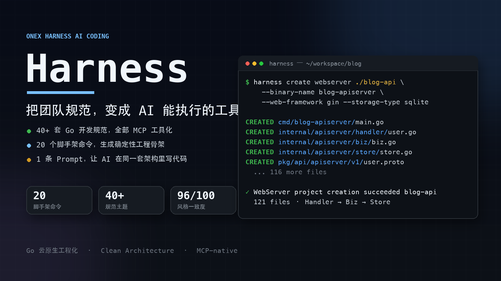
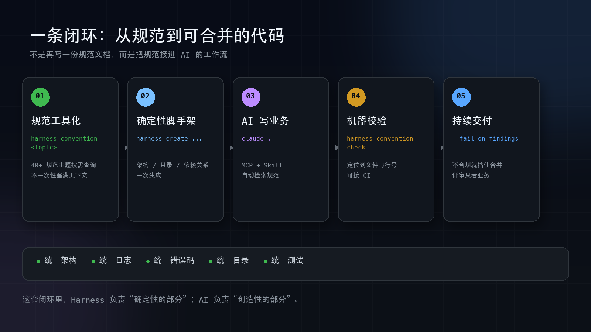
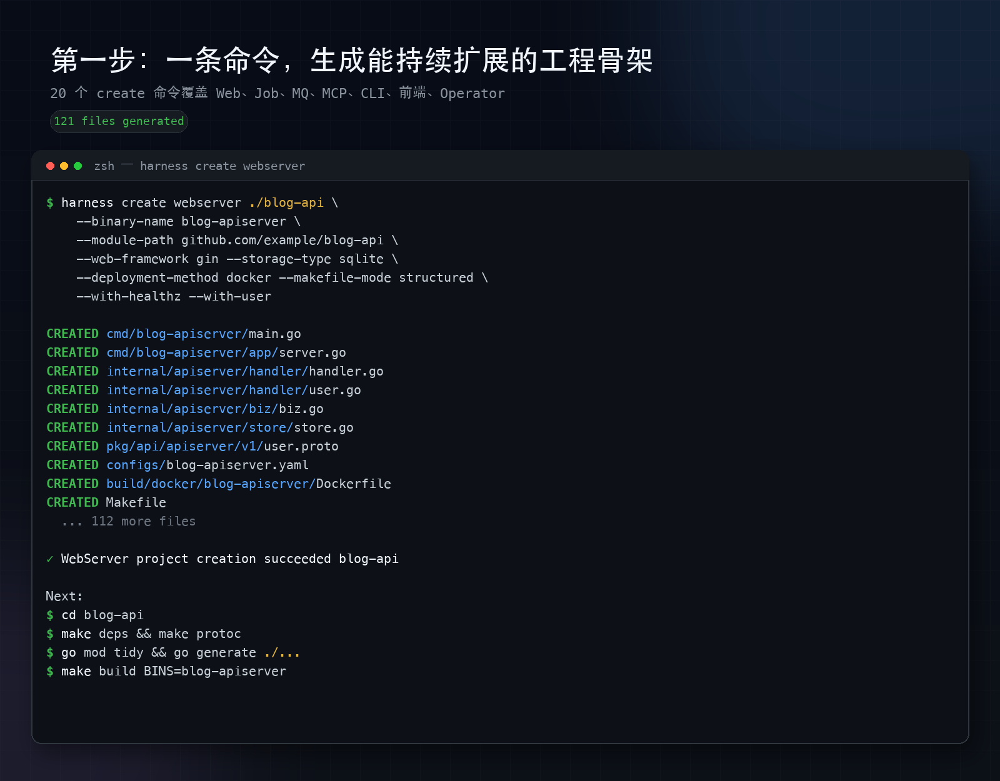
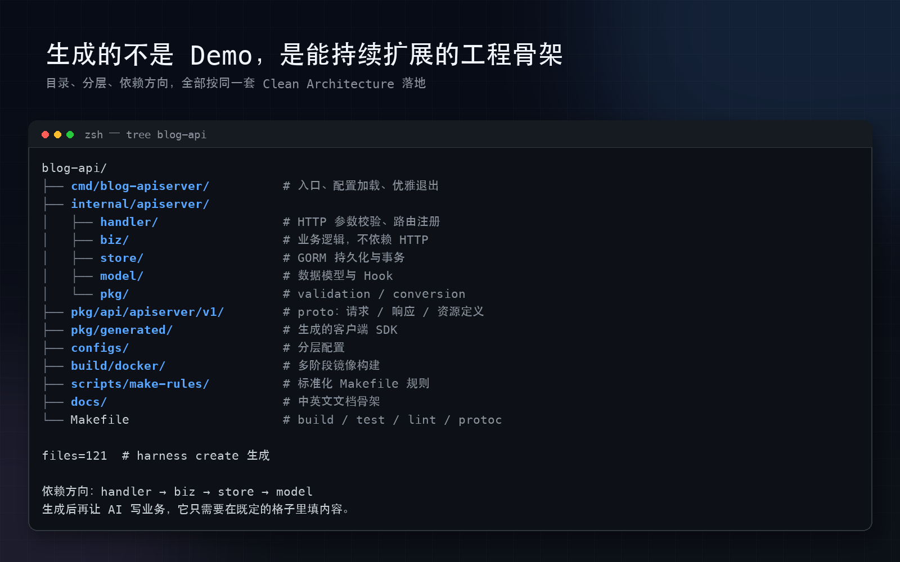
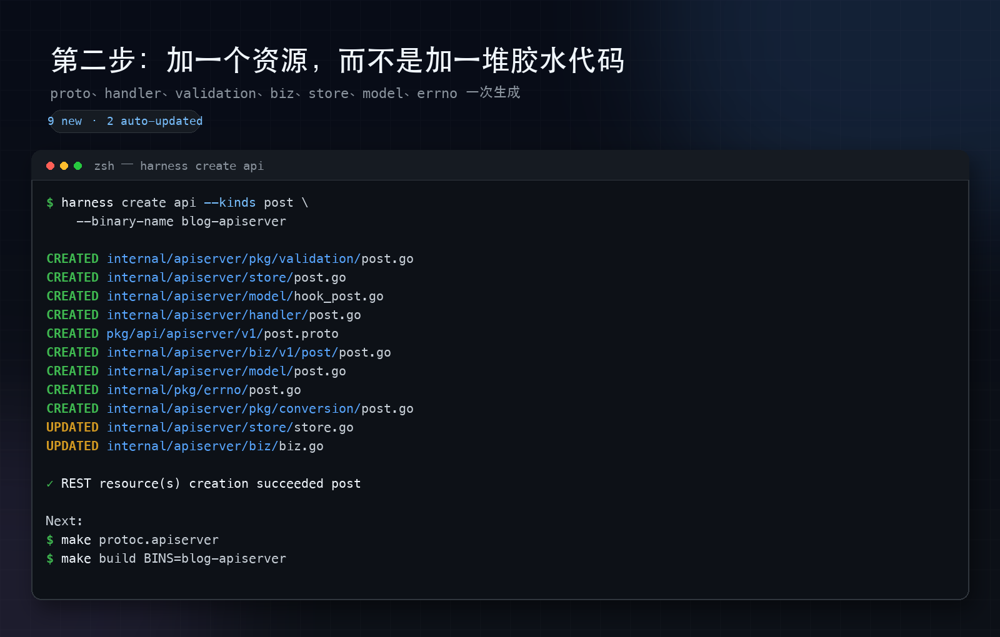
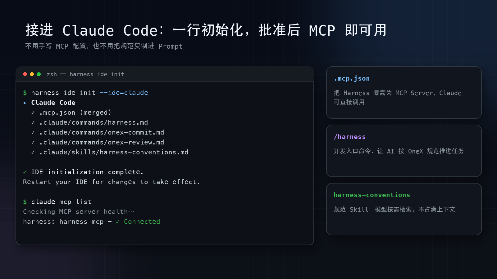
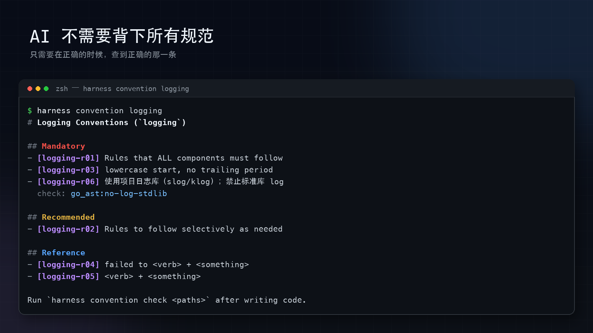
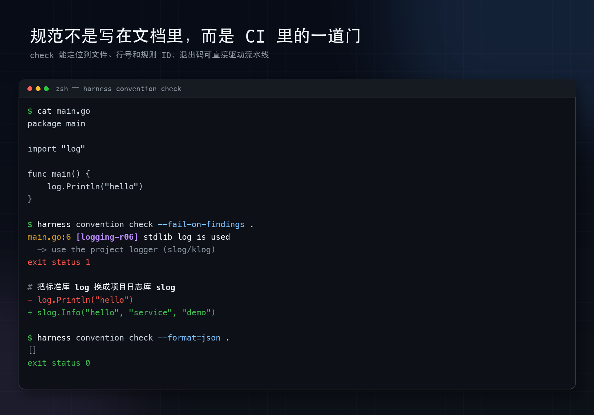
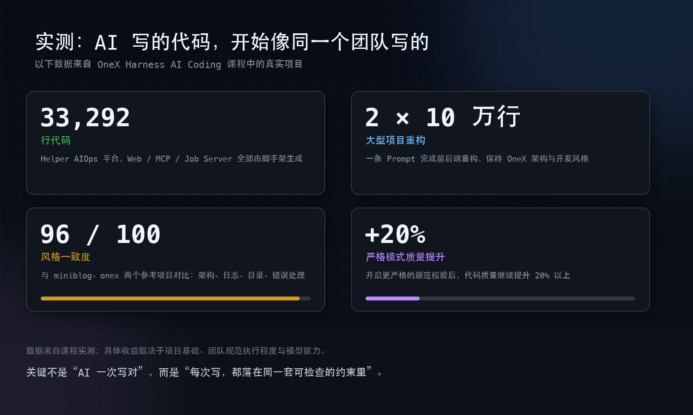

用 AI 写代码，最惊艳的时刻往往是第一次：一个函数、一个文件、一个小 Demo，随便哪个模型都能写得有模有样。
但真正把 AI Coding 放进日常开发之后，就会出现新的问题：代码能跑，但它不像自己或团队内写的代码。架构设计、代码风格、命名规范等，Coding Agent 往往有自己的想法。
如果想要彻底解决这些问题，则需要不断打磨 AGENTS.md、Skills、MCP 等外围配套设施，而这些都属于 Harness。
这篇文章带你体验一下 OneXAI Harness 的强大，我会用真实命令跑一遍：从空目录生成一个 Go 工程，加一个 REST 资源，接入 Claude Code，再让规范检查真正拦住一次不合规提交。
AI Coding 的瓶颈，早就不是生成速度
先说我观察到的一个结论：代码生成速度，已经不是瓶颈了；项目级的一致性，才是。
我观察到的痛点大概有三层：
第一层，规范在文档里，AI 不一定读。很多团队都有编码规范，但规范是写给人看的，不是写给模型看的。你把它贴进 Prompt，短会话还行，一旦上下文变长，模型开始丢细节；你让每个人自己贴，十个人能贴出十个版本。
第二层，每次生成的起点不一样。同一个项目，今天让模型加一个接口，它可能新建一个 service 目录；明天换个人，它又把逻辑塞回 handler。架构不是设计出来的，是模型即兴发挥出来的。
第三层，规范只能靠人 Review。哪条规则是强制的、哪条只是建议、哪条可以例外，全靠 Reviewer 的记忆和耐心。人一累，规范就变成「下次注意」。更扎心的是，现在还有人 Review AI 生成的代码吗？看得过来吗？
所以 AI 写得越快，Review 越像瓶颈。代码生成从「写」转移到了「审」，但审这件事并没有变快。
OneXAI Harness 想解决的，是「确定性」
OneXAI Harness 的定位可以用一句话概括：
把团队规范从「写在文档里」，变成 AI 能调用的工具、脚手架能生成的代码、CI 能执行的检查。
它主要提供四类能力：
| 能力 | 入口 | 解决的问题 |
|---|---|---|
| 规范查询 | harness convention <topic> / MCP convention_<topic> |
AI 按需加载正确的那条规范 |
| 工程脚手架 | harness create ... |
架构、目录、依赖关系一次生成 |
| IDE 接入 | harness ide init --ide=claude |
一行命令把 OneXAI Harness 接进 AI IDE |
| 机器校验 | harness convention check |
把可机检的规范变成 CI 门禁 |

和「写一份更长的 Prompt」相比，这套东西的关键差别在于：规范不再依赖模型记忆，而是变成模型可以主动调用的工具；架构不再依赖模型发挥，而是由脚手架确定性生成；合规不再依赖人眼，而是能返回退出码。
一条闭环：规范 → 骨架 → 业务 → 校验 → 交付
OneXAI Harness 的工作方式，可以画成一条闭环：

- 规范工具化：把 Go 开发规范拆成 40+ 个主题，每个主题都能通过 CLI 或 MCP 工具查询；
- 确定性脚手架：用 20 个
create命令生成项目骨架，目录、分层、依赖方向、基础设施一次到位； - AI 写业务：模型在既定格子里填业务逻辑，需要规范时自己去查；
- 机器校验：
harness convention check定位到文件、行号和规则 ID，退出码可直接驱动 CI； - 持续交付：不合规就挡在合并之前，Review 只需要看业务逻辑。
这里的分工很重要：OneXAI Harness 负责确定性的部分，AI 负责创造性的部分。
确定性的部分包括目录结构、依赖方向、日志初始化、错误码、路由注册、Store 初始化、Dockerfile、Makefile、健康检查、优雅退出等。这些东西每个项目都要有，但每个项目都让 AI 重新发明一遍，纯属浪费，而且必然不一致。
创造性的部分才是业务：这个资源有哪些字段、状态怎么流转、权限怎么判断、查询怎么组合。这些交给 AI 写，人只需要 Review 业务本身。
规范本身也分了级别，不是所有规则都一刀切：
| 级别 | 含义 | 处理方式 |
|---|---|---|
| Mandatory（强制） | 所有项目必须遵守 | 违反需要正式评审；部分规则有机器检查 |
| Recommended（建议） | 没有正当理由就遵守 | 存量项目逐步采用 |
| Reference（参考） | 作为指导，不强制 | 按项目上下文灵活采用 |
先看它提供了什么
OneXAI Harness 是一个命令行工具，安装包在下载页按操作系统和 CPU 架构选择，解压后放进 PATH 即可；AK/SK 则需要到 OneX 账号页创建。装好之后，harness --help 会把命令分成几组：
1 | $ harness --help |
真正撑起「生成」能力的是 create 命令。harness create --help 列了 20 个子命令，覆盖非常全面：
| 场景 | 命令 |
|---|---|
| 新建单体项目 | webserver、jobserver、mqserver、mcpserver、clitool、console |
| 学习示例 | quickstart |
| 多服务工程 | project -c onexstack.yaml |
| 给现有项目加资源 | api、job、mq、mcp、cmd、micro |
| 声明式平台 | declserver、crd、controller-manager、controller |
| Operator | operator、operator-api |
如果你熟悉 K8s，想必已经能看出来 OneXAI Harness 的强大了，它可以设计类 K8s API Server 架构的 Web 项目。
命令虽然多，但大多数团队不需要全用。最常用的是两个：create webserver 起一个服务，create api 往里加资源。下面就从这两个开始。
第一步：一条命令，生成能持续扩展的骨架
我在一个空目录里执行了下面这条命令：
1 | $ harness create webserver ./blog-api \ |
输出是熟悉的 CREATED 列表：
1 | CREATED cmd/blog-apiserver/main.go |
一共 121 个文件。

第一次看到 121 这个数字，可能会觉得「生成这么多，是不是过度设计」。但把目录拆开看，就知道这些文件大多不是业务代码，而是每个正经服务都绕不开的基础设施：

关键在分层，以及层和层之间的依赖方向：
1 | cmd/blog-apiserver/ # 入口、配置加载、优雅退出 |
依赖方向是 handler → biz → store → model。Handler 只做参数校验和响应封装，Biz 不依赖 HTTP，Store 管持久化和事务，Model 只描述数据和 Hook。这个方向一旦定下来，AI 后面往里填东西就不容易乱：它知道业务逻辑该放 Biz，不能塞 Handler；知道查库该走 Store，不能直接在 Handler 里开 db。
这就是「格子」的价值。让 AI 写业务，前提是先有一个它不会写歪的地方。 Harness 先搭框架，再让 AI 做填空题。
骨架生成完，先按输出里的提示做一次完整构建：
1 | $ cd blog-api/ |
这一步能通过，说明工具链、依赖注入和编译链路都通了。
NOTE:
make deps和go generate ./...这两步很容易漏。前者装 protoc 插件，后者生成wire_gen.go；少任何一步，make build都会失败。如果make deps卡在protoc-gen-onexmesh-client，先确认这个插件已经按scripts/make-rules/tools.mk里标注的版本装好，并且$(go env GOPATH)/bin在PATH里。另外，如果目录还不是 git 仓库，make里的版本信息会报HEAD相关错误，先git init并提交一次即可。
第二步：加一个资源，而不是加一堆胶水代码
骨架有了，接下来加一个博客文章资源。命令很短：
1 | $ harness create api --kinds post --binary-name blog-apiserver |
它没有只生成一个 handler，而是把一整条链路都接好了：
1 | CREATED internal/apiserver/pkg/validation/post.go |
9 个新文件，并自动更新 2 个已有文件。

这 11 个文件分别对应什么：
post.proto：请求、响应、资源定义；handler/post.go：HTTP 路由、参数绑定、调用 Biz；validation/post.go：创建和更新的参数校验；biz/v1/post/post.go：业务逻辑入口；store/post.go：持久化实现；model/post.go和hook_post.go：数据模型与 Hook；errno/post.go：资源相关的错误码；conversion/post.go：模型与 API 对象之间的转换；store.go和biz.go：把新资源注册进接口和依赖注入。
这些文件里的业务内容，OneXAI Harness 不替你做。字段怎么定、状态怎么流转、哪些字段可更新、查询怎么分页，仍然是你要和 AI 一起决定的事。但它把「胶水」写完了：路由注册了、接口实现了、依赖都准备好了、错误码占位了。你 Review 的时候，注意力可以放在业务上，而不是「它是不是又忘了把 Store 加进 IStore」。
资源加完后，重新生成并编译：
1 | $ make protoc.apiserver # 生成新资源的 proto 代码 |
到这一步，AI 才真正开始工作。它面对的不是一张白纸，而是一个入口、配置、健康检查、日志、链路追踪和优雅退出都已经接好的工程。它要做的，是在既定结构里补上“文章”这个资源的具体逻辑。
第三步：把 AI 接进来，一行初始化
OneXAI Harness 支持通过 ide init 把自身接入 AI IDE。我用的是 Claude Code：
1 | $ harness ide init --ide=claude |

它做了几件事：
- 把 OneXAI Harness 注册成 MCP Server，写进
.mcp.json，而且是 merge 不是覆盖——已经有别的 MCP 配置不会被冲掉； - 写了一个
/harness命令，作为“按 OneX 规范推进任务”的入口； - 写了
onex-commit、onex-review两个命令，把提交和评审也纳入规范； - 写了一个
harness-conventionsSkill，让模型可以在需要时检索规范，而不是一次性塞满上下文。
重启 IDE 后确认连接。项目级 .mcp.json 里的 Server 可能需要先批准，具体取决于当前项目是否已经信任过：
1 | $ claude mcp list |
如果看到 Pending，在项目目录执行 claude，按提示批准这个 Server（或在会话里用 /mcp 批准），再查一次：
1 | $ claude mcp list |
如果直接就是 Connected，说明这个项目已经信任过该 Server，可以直接用。
NOTE:
如果之前误点了拒绝，执行
claude mcp reset-project-choices可以重置项目级的批准记录，下次进入claude时会重新询问。
这里最值得说的是 MCP + Skill 的组合方式。
OneXAI Harness 有 40 多套规范。如果全部塞进 CLAUDE.md 或系统 Prompt，先不说 token 成本，模型在长上下文里也会丢细节。它的做法是把每套规范暴露成独立的 MCP 工具，名字是 convention_<topic>，比如：
- 写日志时调用
convention_logging； - 设计 REST 接口时调用
convention_rest-api； - 加数据库事务时调用
convention_database； - 不确定目录怎么放时调用
convention_directory。
每个工具返回的是一份精简的规范内容，不是整篇文档。模型只在当前任务需要时取用相关规则，这就是渐进式披露。

比如我在演示项目里查 logging，返回的内容会按强制、建议、参考三个级别列出来；能自动检查的规则，还会带一行 check:，说明它由 convention check 负责校验：
1 | $ harness convention logging |
这意味着模型不是“大概记得要用结构化日志”，而是能拿到一条明确的、带 ID 的规则，再去写代码。
第四步：规范不是写在文档里，而是 CI 里的一道门
前面都是“生成”和“查询”。真正让规范落地的，是检查。
我新建了一个独立的空目录，在里面放一个 main.go，用标准库 log 打日志。
1 | package main |
然后在这个目录里跑检查：
1 | $ harness convention check --fail-on-findings . |
进程以非 0 退出。
NOTE:
convention check会递归扫描目录。演示这个main.go时最好单独建一个空目录；如果在同时放着blog-api的父目录执行，会把项目一起扫进来，看到的就是项目里的其他问题。
把日志换成项目使用的 slog：
1 | - import "log" |
注意 import 也要一起换；check 只看有没有调用标准库 log，不会替你发现未使用的 import，go build 才会。
再跑一次：
1 | $ harness convention check --format=json . |
退出码为 0。

这个检查有三个我很在意的点：
第一，它是确定性的。基于 AST 检查，不是让另一个模型来“评审”。同一份代码，跑一百次结果一样，适合放进 CI，也适合在本地 pre-commit 里跑。
第二，输出是可行动的。文件、行号、规则 ID、修复建议，一个都不少。logging-r06 这种 ID 的前缀就是规范主题，执行 harness convention logging（MCP 里是 convention_logging）就能看到对应的规则说明和检查项，不用在几十页规范里翻。
第三，退出码能驱动流水线。--fail-on-findings 一加，不合规就构建失败。规范从此不再靠“下次注意”，而是靠“这次合不进去”。
当然，不是所有规范都能机器检查。能落成 AST 规则的是其中可判定的一个子集，剩下的仍然要靠 MCP 工具引导 AI、靠 Code Review 兜底。OneXAI Harness 没有假装自己能检查一切。
还有一个细节值得说。我顺手对脚手架生成的项目跑了一次 check，结果不是 0 findings，而是报了几条 error-return-r11：
1 | internal/pkg/rid/salt.go:37: [error-return-r11] panic in library/service code — return an error instead |
这些和日志无关，都是生成代码里的 panic。这反而让我更放心。检查器没有给自家脚手架开后门。 生成器负责把 90% 的重复工作做对，剩下几条仍然需要人判断。规范是工程约束，不是“官方代码一定正确”的背书。
效果：一致性比单次惊艳更重要
讲效果之前先说明：下面这些数字来自 OneXAI Harness 官方教程里给出的实际项目与 AI 对比评分，不是严格 benchmark。不同模型、不同仓库、不同严格度，结果会有差异。但方向是清楚的。
官方给出的几个数据：
- 一个 33,292 行的 AIOps 平台，Web Server、MCP Server、Job Server 全部基于
harness create生成，后续由 AI 迭代业务； - 两个 10 万行级的存量项目，从前端到后端，基本用一条 Prompt 完成重构，重构后与 OneX 技术栈的架构、风格保持一致；
- 重构这两个项目大约花了 100 多元的 Token 费用；
- 让 AI 对比新项目与 miniblog、onex 两个参考项目，在软件架构、日志、目录结构、开发规范、实现方式、开发风格、错误处理、共享包等维度，一致性评分达到 96/100；
- 开启更严格的规范校验模式后，代码质量还能再提升 20%+。

我自己这次演示得到的数字小一些，但更直观：
- 一条
create webserver，生成 121 个文件； - 一条
create api --kinds post，新增 9 个文件、自动更新 2 个已有文件； - 一条
convention check，定位到具体行号，并用退出码区分通过与否。
这些数字背后其实是同一件事：AI 生成的代码开始像一个团队写的了。 不是某一次生成得特别惊艳，而是第十次、第二十次生成，风格仍然收敛在同一套架构里。
对个人开发者，这意味着少花时间在“把 AI 的代码改回自己的样子”；对团队，这意味着 Review 从“检查有没有遵守规范”转向“检查业务对不对”。
它适合谁，不适合谁
我觉得 OneXAI Harness 最适合三类人：
- Go 团队，尤其是已经在用或愿意采用 OneX / onexstack 技术栈的团队；
- 多项目、多服务的团队，需要把架构、日志、错误码、目录结构统一起来；
- 想把 AI Coding 纳入工程流程的团队，不满足于“AI 写完人肉改”，而是希望有脚手架、有检查、有 CI 门禁。
它不太适合另外几类场景：
- 非 Go 项目。它的规范和脚手架都是围绕 Go 云原生技术栈构建的，换语言就不是它的主场；
- 完全自研、且不打算改变架构的项目。OneXAI Harness 是强观点的，它会带着 OneX 的目录、分层和基础包进来，如果你不认同这套架构，用起来会一直打架；
- 只想让 AI 写个一次性脚本或 Demo 的人。这种场景用不上 121 个文件的骨架，直接让模型写更快；
NOTE:
OneXAI Harness 的“强观点”既是优点也是限制。优点是你不需要从零设计架构，缺点是你会被它的架构约束。建议先拿一个真实的小服务试一遍，再决定要不要推广到团队。不要一上来就重构核心系统。
最后
AI Coding 的上半场，大家比的是“谁生成得快”。下半场比的会是“谁的代码能合并、能维护、能扩展”。
AI 生成会越来越快、越来越便宜，一致性不会。只要模型还在自由发挥，Review 成本就会一直存在。OneXAI Harness 的思路不是让模型更聪明，而是把模型不该自由发挥的部分收走：规范变成工具，骨架由脚手架生成，合规交给 CI。
如果你手上正好有一个 Go 项目，我建议按这个顺序试一遍：
1 | harness create webserver ./demo --binary-name demo-apiserver |
这套是手动版。日常使用时，更常见的是让 Claude Code 通过 MCP 驱动 OneXAI Harness：
1 | $ claude |
模型通常会先调用 create_api 生成资源，需要时查 convention_* 规范，最后用 convention_check 自检。你只需要描述需求，然后 Review 业务逻辑。
半小时之内，你大致就能判断它是否适合你的团队。
工具下载地址：https://onex.feizaonet.com/downloads。文中演示的脚手架、规范查询和检查命令都来自本机实际执行，配图基于真实终端输出做了排版整理。